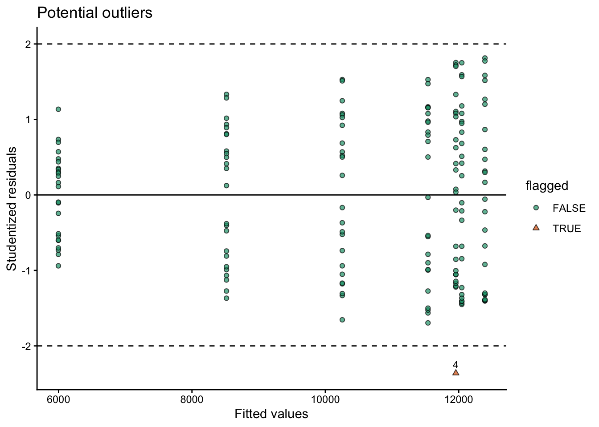
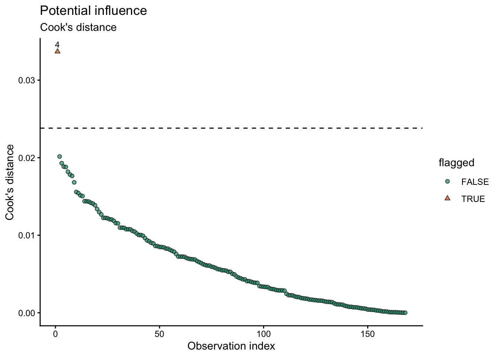
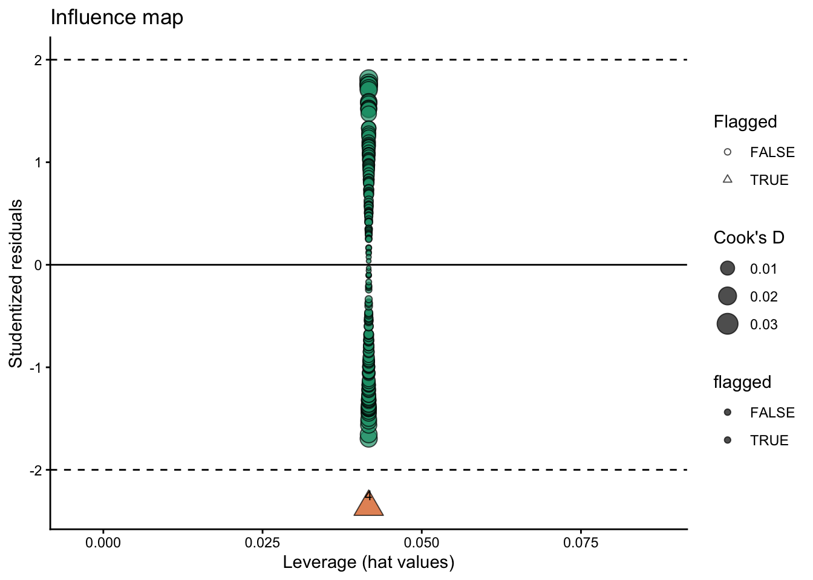
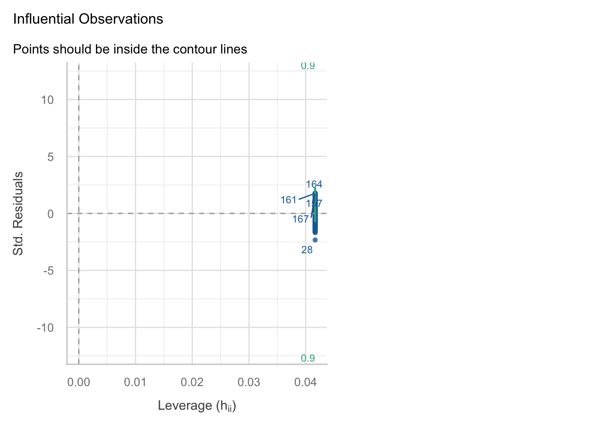
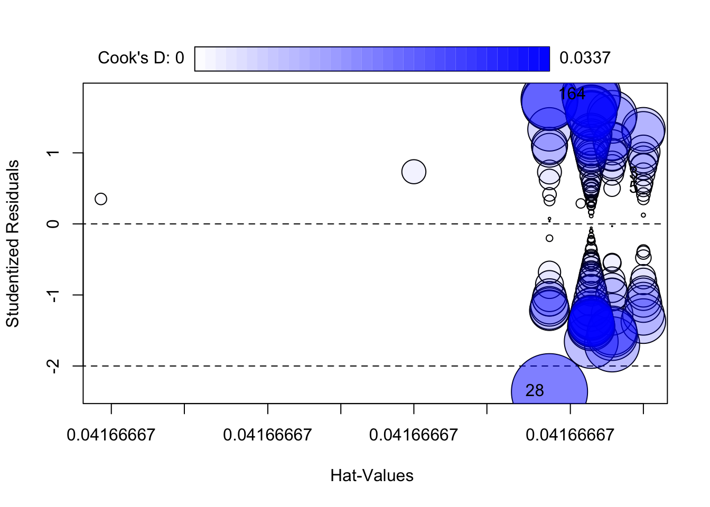

library(pacman)
p_load(dplyr, tidyr) # data wrangling
p_load(ggplot2) # figures
p_load(broom, performance)Data Outliers
Agronomy
Statistics
Decision Making
1 Why this matters 🧭
During exploratory data analysis (EDA), you will often see observations that look unusual (very high/low yield, odd nutrient values, a point far from the trend). A common impulse is to delete them before modeling.
In agronomy and most sciences, automatic deletion at EDA is not a good default. Unusual values can be caused by:
- Error (data entry, unit mismatch, sensor failure, mislabeling) 🧾
- Reality (true variability: soil/drainage gradients, pest/disease, stand loss, weather, management differences) 🌱🌦️
- Model mismatch (a simple model misses structure) 🧠
2 Core principle ✅
“Outlier” ≠ “bad data.”
EDA is the stage to flag and investigate, not to “optimize” the dataset.
3 A practical workflow 🔎➡️📈
| Step | Goal | What to do | Typical output |
|---|---|---|---|
| 1. Screen | Catch obvious issues | Range checks, missingness, duplicates, unit checks | A list of flagged rows |
| 2. Investigate | Decide what’s wrong vs real | Compare against field notes/metadata; check plausibility; cross-check related variables | Classification + notes |
| 3. Model | Fit and diagnose | Fit model; inspect residual patterns; check influence | Diagnostics and influence flags |
| 4. Sensitivity | Test robustness | Refit with documented exclusions / influential points removed; compare estimates | “Do conclusions change?” |
| 5. Report | Be transparent | Document rules; keep raw data; report primary + sensitivity results | Reproducible decisions |
4 How to classify unusual observations 🧩
Three categories to keep straight
- Confirmed errors 🧾
- wrong units (lbs/ac recorded as kg/ha), decimal shift, impossible values, duplicates, corrupted rows
- wrong units (lbs/ac recorded as kg/ha), decimal shift, impossible values, duplicates, corrupted rows
- Protocol deviations 🚜
- plot not harvested, mislabeled sample, equipment failure, known flooding/animal damage
- plot not harvested, mislabeled sample, equipment failure, known flooding/animal damage
- Rare but plausible values 🌾
- extreme but possible outcomes due to real field variability
- extreme but possible outcomes due to real field variability
5 When is deletion justified? 🗂️
Deletion is justified when you can defend it with evidence
Reasonable reasons include:
- Impossible values (e.g., negative yield)
- Unit/entry mistakes confirmed by checks
- Duplicate records
- Confirmed protocol violations documented in metadata/field notes
Best practice
- Keep a raw dataset unchanged
- Create a cleaned dataset with explicit rules
- Record what changed in a data-cleaning log
6 When should you NOT delete? ⚠️
Avoid deleting points just because they look extreme
Do not remove observations because:
- they are “far from the mean”
- they reduce significance or worsen model fit
- they are hard to explain
- they might represent true field variability (common in agronomy)
If removing one or two points flips your conclusion, the key message is usually: > the inference is fragile (design/model/measurement may need improvement), not that the data should be “fixed.”
7 Outliers & Influence 🎯
An observation can be unusual without changing conclusions. What often matters more is whether it is influential or not.
Key ideas
- Large residual: unusual Y given X
- High leverage: unusual X (predictor pattern)
- Influence: strongly changes fitted coefficients/predictions
On this section, we explore tools to identify these cases.
7.1 Studentized residuals 📏
Outliers in Y given X
A residual is \(e_i = y_i - \hat{y}_i\). To compare residuals across observations, we standardize them.
Studentized residuals account for differences in residual variability and leverage. In practice, the most common diagnostic in R is the externally studentized residual:
rstudent(fit)returns the studentized residual for each observation (computed leaving that observation out of the residual SD estimate).
Interpretation
Large absolute studentized residuals indicate observations whose Y value is unusually far from the model expectation, given their X values.
Rules of thumb (for flagging, not automatic deletion)
\(|r_i| > 2\): potentially unusual
\(|r_i| > 3\): strongly unusual (worth investigating)
With large datasets, some points will exceed these cutoffs by chance, so treat them as screens.
7.2 Cook’s distance 🍳
Cook’s distance measures how much the fitted model would change if observation (i) were removed to fit the model. It combines:
how unusual the point is in Y (residual size) and
how unusual the point is in X (leverage)
In R: - cooks.distance(fit) computes Cook’s distance for each observation.
Interpretation
A large Cook’s distance means: > “This observation can have a strong impact on the fitted coefficients and the conclusions.”
Rules of thumb (for flagging)
Common cutoffs used for screening include:
\(D_i > \frac{4}{n}\) (simple and widely used)
\(D_i > 1\) (often considered very influential, especially in smaller datasets)
These are not universal thresholds. They are starting points for investigation.
8 Example in R 💻
8.1 pacakges
8.2 data
# Example:
cornn_data <- read.csv("../week_06/data/cornn_data.csv") %>%
mutate(n_trt = factor(n_trt, levels = c("N0","N60","N90","N120","N180","N240","N300")),
block = factor(block),
site = factor(site),
year = factor(year))8.3 model fit
# Fit model
fit <- lm(yield_kgha ~ n_trt, data = cornn_data)8.4 Residuals table
###
# Create table with residuals and flag suspicious observations
diag_tbl <- augment(fit, data = cornn_data) %>%
# .std.resid = standardized residuals (broom)
mutate(
stud_resid = rstudent(fit), # studentized residuals (externally studentized)
cooks_d = .cooksd, # Cook's distance from broom
flag_stud = abs(stud_resid) > 3,
flag_cook = cooks_d > 4 / n(),
flagged = flag_stud | flag_cook
) %>%
arrange(desc(flagged), desc(cooks_d), desc(abs(stud_resid)))
# View only flagged observations (tidy table)
diag_tbl %>%
filter(flagged) %>%
select(everything())# A tibble: 1 × 18
site year block n_trt nrate_kgha yield_kgha weather .fitted .resid .hat
<fct> <fct> <fct> <fct> <int> <int> <chr> <dbl> <dbl> <dbl>
1 A 2004 4 N300 300 5000 normal 11957. -6957. 0.0417
# ℹ 8 more variables: .sigma <dbl>, .cooksd <dbl>, .std.resid <dbl>,
# stud_resid <dbl>, cooks_d <dbl>, flag_stud <lgl>, flag_cook <lgl>,
# flagged <lgl>8.5 Plots
8.5.1 i. studentizided residuals
# plot outliers
diag_tbl %>%
ggplot(aes(x = .fitted, y = stud_resid)) +
geom_hline(yintercept = c(-2, 2), linetype = "dashed") +
geom_hline(yintercept = 0)+
geom_point(aes(shape = flagged, fill = flagged), alpha = 0.7) +
scale_shape_manual(values = c(21,24))+
scale_fill_brewer(type = "qual", palette = 2, direction = 1)+
geom_text(data = diag_tbl %>% filter(flagged),
aes(label = block), # use block as label
vjust = -0.7,
size = 3) +
labs(title = "Potential outliers",
x = "Fitted values",
y = "Studentized residuals",
shape = "flagged"
) +
theme_classic()
8.5.2 ii. Cook’s distance
diag_tbl %>%
mutate(cook_cut = 4 / n()) %>%
ggplot(aes(x = seq_along(cooks_d), y = cooks_d)) +
geom_hline(aes(yintercept = cook_cut), linetype = "dashed") +
geom_point(aes(shape = flagged, fill = flagged), alpha = 0.7) +
scale_shape_manual(values = c(21,24))+
scale_fill_brewer(type = "qual", palette = 2, direction = 1)+
geom_text(data = diag_tbl %>% filter(flagged),
aes(label = block), # use block as label
vjust = -0.7,
size = 3) +
labs(title = "Potential influence",
subtitle = "Cook's distance",
x = "Observation index",
y = "Cook's distance",
shape = "flagged"
) +
theme_classic()
8.5.3 iii. Hybrid option
diag_tbl %>%
ggplot(aes(x = .hat, y = stud_resid)) +
geom_hline(yintercept = c(-2, 2), linetype = "dashed") +
geom_hline(aes(yintercept = 0), linetype = "solid") +
geom_point(aes(size = cooks_d, shape = flagged, fill = flagged), alpha = 0.7) +
scale_shape_manual(values = c(21,24))+
scale_fill_brewer(type = "qual", palette = 2, direction = 1)+
geom_text(data = diag_tbl %>% filter(flagged),
aes(label = block), # use block as label
vjust = -0.7,
size = 3) +
labs(
title = "Influence map",
x = "Leverage (hat values)",
y = "Studentized residuals",
size = "Cook's D",
shape = "Flagged"
) +
theme_classic()
8.5.4 other options
The performance package offers a variety of functions to check assumptions and for outliers/influential observations
performance::check_model(model = fit, check = c("outliers"))
The car package also has useful functions for outlier detection and influence diagnostics such as ‘outlierTest()’ and ‘influencePlot()’:
car::outlierTest(fit)No Studentized residuals with Bonferroni p < 0.05
Largest |rstudent|:
rstudent unadjusted p-value Bonferroni p
28 -2.36159 0.0194 NAcar::influencePlot(fit)
StudRes Hat CookD
3 0.6973319 0.04166667 0.003029990
5 0.4985601 0.04166667 0.001551104
28 -2.3615895 0.04166667 0.033682827
164 1.8139050 0.04166667 0.0201497119 Treatment options 🛠️
What to do instead of deleting
Options in increasing order of intervention
- Do nothing (keep the point) if it is plausible and conclusions are robust
- Fix errors (units, typos) with documentation
- Add structure (block/site/year random effects, covariates, interactions) if the point reveals missing model structure
- Model non-constant variance or transform the response if residual spread grows with mean
- Robust methods if the goal is stable estimation under heavy tails (useful, but interpret carefully)
10 Reliable R packages 📦
Good, reliable tools for diagnostics
Base R (reliable and transparent)
- rstudent(), rstandard()
- cooks.distance(), hatvalues(), dfbetas()
- influence.measures()
performance (great for teaching)
- performance::check_model() for a consistent diagnostic overview (and it works for many model types)
car (classic and widely used)
- car::outlierTest() (Bonferroni-adjusted test for large residuals in lm)
- car::influencePlot() (visual summary of leverage/residual/influence)
broom (tidy output)
- broom::augment() to attach fitted values and residuals back to a dataset
11 Final Suggestion 📌
In this course, we do not delete observations during EDA unless they are confirmed errors or clear protocol violations. Instead, we flag unusual points, fit models, evaluate influence, and use sensitivity analyses. Any exclusions must be documented and reproducible.
12 Packages used for outliers & influence diagnostics 📦
broom: provides
augment()to attach observation-level diagnostics (e.g., fitted values, residuals, leverage, Cook’s distance when available) back onto your data frame for tidy workflows. https://cran.r-project.org/package=broomperformance: provides
check_model()for a compact, friendly set of diagnostic plots (assumptions + influential observations) that works across many model classes. https://cran.r-project.org/package=performancecar: classic applied regression tools; includes dedicated functions commonly used for outliers/influence such as
outlierTest()andinfluencePlot()(bubble plot of studentized residuals vs leverage with Cook’s distance). https://cran.r-project.org/package=car
13 References 📚
Cook, R. D. (1977). Detection of influential observation in linear regression. Technometrics, 19(1), 15–18. https://doi.org/10.1080/00401706.1977.10489493
Weisberg, S. (2014). Applied Linear Regression (4th ed.). Wiley. Chapter 9: Regression Diagnostics. https://www.stat.purdue.edu/~qfsong/teaching/525/book/Weisberg-Applied-Linear-Regression-Wiley.pdf
James, G., Witten, D., Hastie, T., & Tibshirani, R. (2021). An Introduction to Statistical Learning (2nd ed.). Springer. Chapter 3: Linear Regression (see the section on “Potential Problems”). https://www.statlearning.com